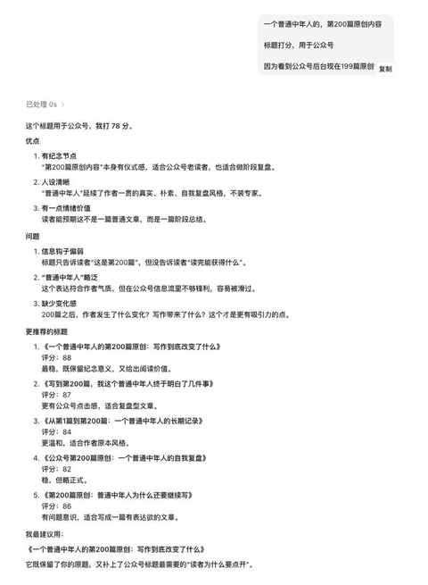
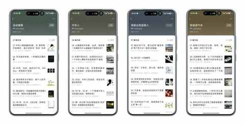
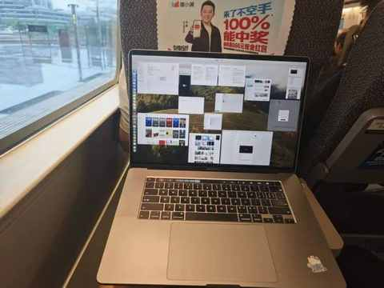
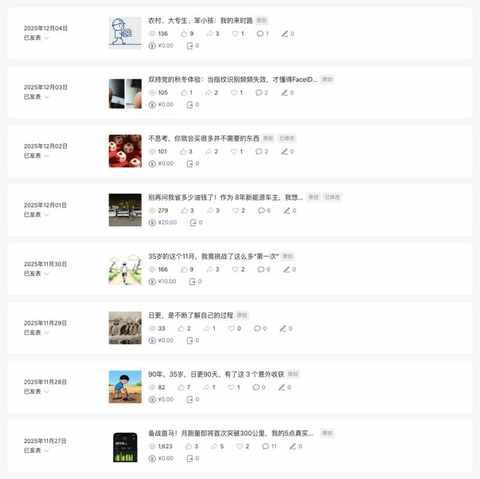
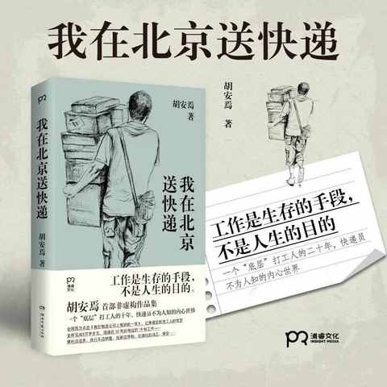
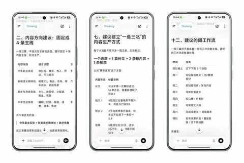
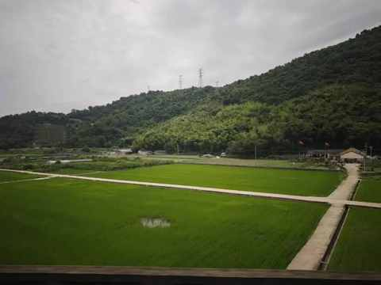

一个普通中年人的第200篇原创：写作到底改变了什么
从后台的199篇开始
今天要去福州喝喜酒，一大早便起来赶高铁，顺利上车后，顺势在座位上打开笔记本，和往常一样看了看公众号后台：

打开公众号后台的时候，看到原创内容数量停在199篇。
这意味着，再发一篇，就是第200篇原创， 瞬间决定先凑个整，完成第200篇原创内容才是当务之急，不亚于燃眉之急的程度！
这个数字不算大，和真正高产的作者比起来甚至有些普通。但对一个没有团队、没有固定选题会、也没有靠写作谋生的中年人来说，200篇已经足够让我停下来想一想：过去这些年，我到底写了些什么？

我习惯用AI来辅助，主要是用来拟定标题，这样能让我快速进入写的状态， 本次第200篇原创文章的标题亦然有AI的辅助。
万事开头难，写文章也是一样，在有了一个明确的标题之后，思路也能有所聚焦，如果你不知道写什么。
这199篇都写了什么
如果按主题分，大概是下面这些：
- 写新能源车 从比亚迪唐到极氪7X，从插混到纯电，从能耗、续航、辅助驾驶，到长途、春运、家用场景。
- 写跑步和身体 从骑行到跑步，从减重到首马，从装备到疲劳债。
- 写中年生活 待业、兼职、家庭、回乡、育儿、睡眠、维持体重。
- 写消费和选择 买车、买鞋、买装备，背后其实是在写普通人如何做决策。

表面看，这200篇写得很杂，而且水准起伏很大。
但认真看，其实都围绕同一件事：一个普通中年人如何在具体生活里做选择。
写作改变了什么
一、重拾表达欲
16寸的笔记本在高铁上使用，稍微有点大，14寸可能更合适。

极少在高铁上把笔记本电脑打开，记得上次是在19年的12月底。
为什么6年多后的今天，依然印象深刻呢？
因为当时在写PPT，同时也在抖腿，旁边座位的大哥提醒好几次不要抖腿了。
不管你是一个i人或e人，是外放还是内敛，都有天然的表达欲在。
写的多了之后，你会更愿意表达，表达的内容不用多么深刻，完全可以是日常的一件件小事，一个个相对独特一些的体会或感悟。
二、了解真实的自己
在快节奏和信息爆炸的当下，普通人了解一些名人变得越来越容易，反而了解真实的自己变得越来越难。
写作是一个契机，更是一段可以在某一段可以在心灵上独处的时间，可能写的时候你和我一样在满载的高铁车厢，也可能在熙熙攘攘的咖啡馆……
不过，这种时候似乎有一个结界，能自主隔绝外部的信息，甚至外部环境能对你有所启发，你在观察自己的同时也在观察周边的人和事。
上图是某天晚上，丢完垃圾后来记录在flomo上的一条信息，当时正面迎来从外面回来的邻居，在我尚在内心里纠结是否打招呼的时候，我们已经都离开对方的视线，甚至正在纠结的时候听到对方的窃窃私语。
想想自己，真特么拧巴，还老大不小了。
但拧巴又不犯法，最多有点不礼貌，给其他人不好的印象。
为了避免这类情况高频发生，我基本在人比较少的时间去丢垃圾、不接陌生号码的电话、早上送娃回家后会不坐电梯爬楼梯上楼……
由于AI自带的谄媚属性，真实这个属性在接下来会愈加重要。
我当下越来越笃定一个道理：不真实的人更何谈真诚！虚假的真诚即便伪装的再好，也如断了线的风筝一般，一有风吹草动便会无影无踪。
三、发掘兴趣与爱好
之所以用发掘，而非发现，是因为必须投入精力和时间才能有所收获。
想知晓自己对什么东西或事情有兴趣和爱好，量的积累必不可少。
尤其是对于我这种，农村出生的大专生来说，更是如此。
因为从小是在物资并不丰富的农村长大，可以说从小到高中的时期，涉猎的东西太少太少，对于自己对什么感兴趣和爱好的认识极其有限。
长期兼职写，是一个把自己逐步掏空，然后又一点点填充的过程，这个过程既有痛苦也有收获。
好似去年，完成100天日更挑战的最后20多天的状态。
每天都要憋到晚上9点或10点才能开始打开微信公众号的编辑器，开始打字，然后在零点到来前把文章发布出去。

遇到这种时候，兴趣与爱好便是解药之一，关于这些内容总能说上一些还算有信息量的内容与真实感受。
随着写的内容的增多，同时在多个平台分发内容，主要在这4个平台做分发：少数派、什么值得买、小红书、新出行，id和公众号同名，都是： 约斯特普通 。
我越来越肯定，分享是我最大的爱好，现在对新能源车和跑步依然有浓厚的兴趣。
四、知晓普通人视角的宝贵和稀缺
谈到视角，不得不提到最近几年挺火的两本书。
《我在北京送快递》胡安焉

《跑外卖》王晚
还有在抖音火起来的各种工地小哥、工厂的工人、餐厅服务员等等，不胜枚举。
这些事情，于我而言都证明了一件事：绝大多数人都是普通人，但在公域中普通人的视角宝贵且稀缺。
记得小时候，经常问爷爷奶奶他们小时候是怎么过的，可能他们确实不善言辞，大部分时候的回答都是：那时候苦啊，现在好多了。
作为小朋友，完全无法具象化的去理解，只能get到一个信息：爷爷奶奶那时候苦，没有现在过得好。
很多普通日子，如果不写下来，很快就会消失。而消失的又岂止是日子，人也会消失，爷爷在2020年过世，我早已无法再问他一次。
写下来之后，它们至少被认真的记录下来。很多人不知道的是，能把一件事情有条理的说清楚，是一种能力，这种能力部分来自每个人自带的天赋，更多的需要日常练习，每一次写都是一次脚踏实地的练习。
毕竟，只有有了能把一件事有条理的说清楚能力，才能逐步讲好一个故事、两个故事、很多个故事……
第200篇之后，想怎么继续
依然继续聚焦这三个方向：
- 继续写真实用车 特别是新能源车、家庭用车、长途实测、用车成本。
- 继续写运动和身体 跑步、减重、恢复、装备、普通中年人的状态管理。
- 继续写普通人的选择 买什么、怎么选、为什么变、如何应对中年阶段的新问题。
如果说，前200篇更多是在记录自己，记录这一阶段的所思所想所做，后面的写作希望能多一点能帮到他人。

此处，AI依然没有缺席，AI帮我规划的明明白白。
第200篇不是终点，是一个节点
第200篇原创并不意味着什么了不起的成就。
它只是提醒我，一个普通人如果愿意持续记录，生活也会慢慢留下纹理，一颗再小的石子丢进河里也会激起一层层涟漪。
我依然是那个普通中年人，继续开车、跑步、带娃、体验与试错，也继续把这些普通经历写下来。
因为对我来说，写作不是为了把生活写得多精彩，而是为了不让生活只是匆匆过去，让人逐步忘记生活本来的模样。

谨以刚刚在行驶高铁的座位上拍的一张照片，作为本篇文章的结尾，如果一定要给这张照片一个标题，那就叫在路上吧。